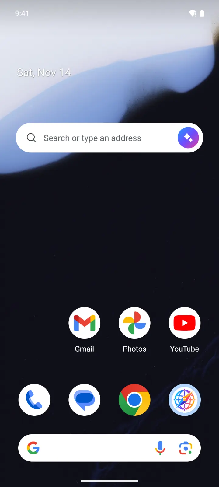
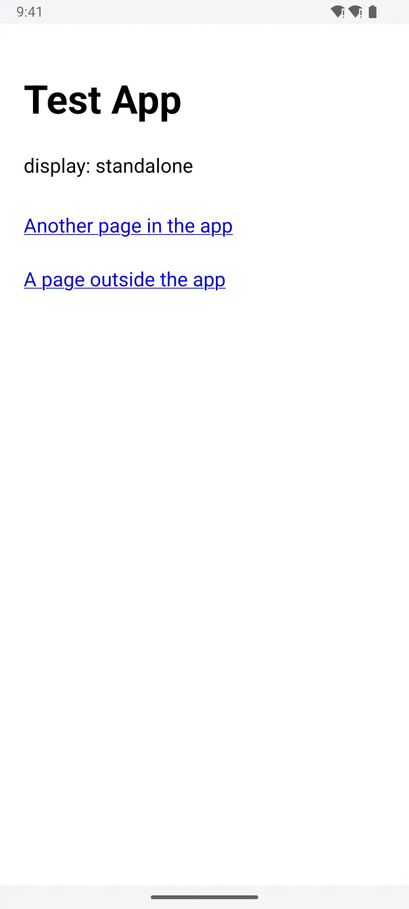

The widget and home-screen shortcuts
How-to
Add a Wayward search widget or a shortcut to a favorite website to your phone's home screen.
Add the search widget
- Hold an empty spot on your phone's home screen and pick Widgets (the name varies by phone).
- Find Wayward and drag Wayward search onto your home screen. It's four cells wide; hold it to resize it.
Tap its pill (Search or type an address) and Wayward opens a new tab with the address bar ready to type in. Its Ask AI button opens the assistant, or Premium if you don't have it. The button is hidden while the assistant is off the bar.

Put a site on your home screen
- Open the site in a regular tab.
- Open the ⋮ menu and tap Add to home screen.
- Check the name, and tap Add. The dialog says how the icon will open:
- Opens as an app, in its own window. for a site that describes itself as an app,
- Opens this page in Wayward. for any other page.
- Your phone then asks to place the icon. Confirm it there.

A site that opens as an app gets its own window and its own card in recent apps, with no Wayward bar on its own pages. If you follow a link off the site, a slim bar shows the way back (Back to the app).

Add to home screen isn't offered in private tabs, since the icon would outlast the private session. If the icon is already there, Wayward says Already on your home screen: name and icon updated. Some phones' home screens don't take shortcuts at all, and Wayward says so.
A saved task on your home screen
A task you saved for the assistant can get an icon too: in Settings > AI assistant > Saved tasks, tap the task's ⋮, then Add to home screen. Its icon opens Wayward with the task's words in the assistant's message box. See receipts and saved tasks.
More in Browsing
- Search, keep a few tabs open, and find your way home
- Search or go to an address
- Copy, paste or share a page's address
- Scan a QR code
- Change your search engine, and search one site directly
- Open, find and close tabs
- Pin, rename or pick several tabs
- Group your tabs
- Use the start page
- Find words on a page
- Translate a page
- Read an article without the clutter
- Desktop site, zoom, print and save as PDF
- Hold a link, picture or video for more
- When a page asks you something
- Find a page in your history, or clear it
- Bookmarks, folders, import and export
- Links from other apps, and link previews
- Sign in with your password manager